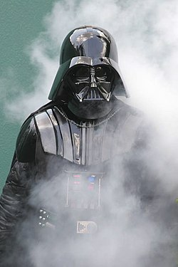
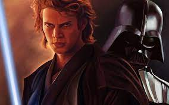

Qui est Vador ?
Anakin Skywalker, ou Dark Vador (en anglais : Darth Vader), est un personnage de fiction, successivement chevalier Jedi et seigneur Sith,
et le personnage central des deux premières trilogies de la saga
cinématographique Star Wars conçue par George Lucas.
Dans la trilogie originale composée d'Un nouvel espoir (1977), de L'Empire contre-attaque (1980) et du Retour du Jedi (1983), il est présenté
sous le nom de Dark Vador, un cyborg menaçant vêtu et masqué de noir, au service de l'Empereur Palpatine. Il incarne alors le principal méchant de l'histoire.
Dark Vador apparaît également dans le film dérivé Rogue One (2016), dont les événements se situent juste avant l'épisode IV.
La prélogie, composée de La Menace fantôme (1999), L'Attaque des clones (2002)
et La Revanche des Sith (2005), explore l'enfance et la jeunesse d'Anakin Skywalker, détaillant les
raisons et les circonstances de sa transformation en personnage malfaisant.
Son éducation en tant que Jedi auprès d'Obi-Wan Kenobi, son basculement du côté obscur de
la Force pour devenir l'apprenti et le bras armé de l'empereur Palpatine, sa rédemption finale lui permettant d'accomplir sa destinée — ramener l'équilibre dans la Force et éliminer les Sith — et le fait qu'il soit
le père des jumeaux Luke Skywalker et Leia Organa, constituent l'intrigue principale des deux premières trilogies.

Anakin Skywalker
Anakin Skywalker était un Chevalier Jedi originaire de la planète désertique Tatooine qui servit la République Galactique dans ses dernières années.
Il fut le Maître Jedi de la jeune Togruta Ahsoka Tano pendant la Guerre des Clones. Succombant ensuite au Côté Obscur, il devint le Seigneur Sith Dark Vador. Indéfectible bras-droit de Dark Sidious durant l'ère Impériale, il prit part à la Purge Jedi, à la lutte contre la rébellion et à la Guerre Civile Galactique avant de revenir du Côté Lumineux grâce à son fils, Luke Skywalker.
Né sans père et fils de Shmi Skywalker, il fut l'époux secret de la sénatrice Padmé Amidala de Naboo avec qui il eut deux enfants : Luke et Leia

| Anakin Skywalker | Darth Vador | |
|---|---|---|
| Taille | 1,88 m | 2,03 m |
| planète | Tatooine | Moustafar |